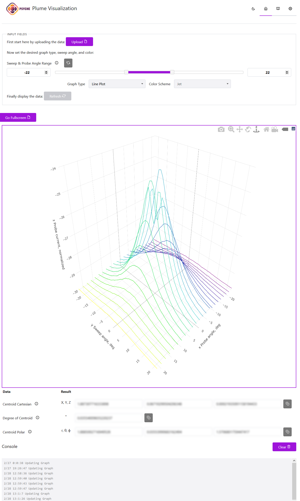

NASA Psyche Capstone Project
For my senior year, I am collaborating with a team of 4 to complete a research project as part of the NASA Psyche mission. We are exploring Machine Learning and Data Science techniques for fitting a complex 3D surface. Our client (NASA) is interested in potential solutions to minimize error. More info about NASA Psyche Capstone projects can be found here.
About the Pysche Mission
 The Psyche mission is a journey to a unique metal asteroid orbiting the Sun between Mars and Jupiter. What makes the asteroid Psyche unique is that it appears to be the exposed nickel-iron core of an early planet, one of the building blocks of our solar system. Deep within rocky, terrestrial planets - including Earth - scientists infer the presence of metallic cores, but these lie unreachably far below the planets' rocky mantles and crusts. Because we cannot see or measure Earth's core directly, Psyche offers a unique window into the violent history of collisions that created terrestrial planets.
The Psyche mission is a journey to a unique metal asteroid orbiting the Sun between Mars and Jupiter. What makes the asteroid Psyche unique is that it appears to be the exposed nickel-iron core of an early planet, one of the building blocks of our solar system. Deep within rocky, terrestrial planets - including Earth - scientists infer the presence of metallic cores, but these lie unreachably far below the planets' rocky mantles and crusts. Because we cannot see or measure Earth's core directly, Psyche offers a unique window into the violent history of collisions that created terrestrial planets.

About the Ion Thruster
Ion thruster's are a unique featurisitc technology which will enable human's to travel further and further distances from the earth. This mainly eletric thruster harnesses solar power to ionize gas and provide thrust. Although the thrust generated is minimal, the thruster can be engaged for months at a time. So in the zero gravity of deep space there is no opposiing forces to thrust like earth's gravity or air friction so over time it can become substantial.
The Problem Posed
During operation, Hall thrusters exhaust a hemispherical cloud of plasma known as a plume.
Knowing the shape of the plume is important for two reasons:
- Ensures other spacecraft surfaces are not damaged by ion impingement
- Provides information on how efficiently the thruster is working
Key features of the probe measurements are not captured by fit functions used for the interpolation, which causes increased uncertainty in the key plume shape parameters. Certain sections of the plume are easier to fit as they resemble simple normal distributions. However, towards the end of the plume there are curves which contain this signature dip as shown in the chart. As shown in the image, standard statistical fitting techniques are insuffecient for fitting this dip. The goal of our research is to find machine learning techniques for fitting this curve. As well as create a data science application which will help NASA engineers visualize experimental data.
Our Application
Above is a screenshot of the application we have developed for data analysis and computation of the thruster plume. The application comes in two variations. A pure Javascript implementation and a Javascript and Python implementation with Python as the backend. Please be aware this application is still in the early days of development. This 3d graph is completely interactable thanks to the amazing plotly library. There are two dropdowns which represent the type to be generated and graph color scheme respectively. The graph type can be either a contour plot, line plot, surface triangulation, or scatter plot which is generated dynamically from the inputted dataset. Additionally, there is a x and y range slider, allowing the user to change the x and y bounds.
Shown above is a modified display of the data to illustrate how it is fully interactive and manipulable. I would love to share more about the application but cannot due to security concerns.
Technologies Used


Machine Learning
We have been exploring many machine learning techniques and strategies for fitting this data. We have had success using Keras with TensorFlow.
We have begun by modulating the problem into easier to solve problems. We plotted individual collectors and attempted to use deep learning techniques for fitting individual lines. Below are some of the fits we have created. On the left is the original data and on the right is the machine learning line fit:
Below is another fit we have generated. As you can see it fits it adequetly but has issues at either tail end of the curve. The curve is not exact. We have worked on remedieting this issue by modifying the parameters of the deep fit such as epoch, learning rate, batch size, and loss function.
More Info from NASA & Sources
- TVP Paper
- By Gabriel F. Benavides, Jonathan A. Mackey, Drew M. Ahern, and Robert E. ThomasGlenn Research Center, Cleveland, Ohio Link